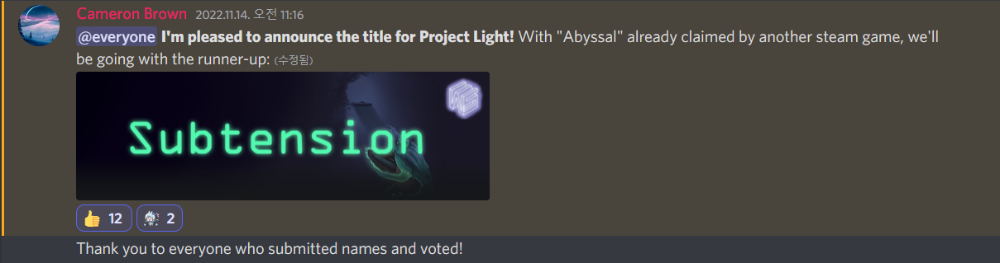

Gold - Week 1 Sprint
Nov 14th, 2022 to Nov 27th, 2022 - Quality Assurances and Bugs Fix

For this sprint, since the last sprint was the final development sprint for this project, we shifted to focus on fixing remaining bugs and QA for this sprint to ensure that all the aspects of our game meet the quality standard. We also had Thanksgiving break which allowed us to take a break and recover for the final sprint. As a result, this sprint was a bit shorter than the last sprint due to the break cutting our final sprint into two. Therefore, my main tasks for this sprint were to playtest, report any bugs, fix bugs, and take a break during the Thanksgiving break.
Programming, QA, and Bug fixes (7 hours)
As I mentioned above, my major task for this sprint was fixing bugs. Since I was the one who created the ship system architecture and decided to tackle bugs regarding ships and systems. Since there were quite a lot of bugs I fixed, I will list down a few bugs I fixed that I think that critical.
Doors
During my playtesting session, I noticed that doors do not play significant roles and I realized that doors never get jammed no matter what. Our original intention for doors is to pay attention to doors because if doors are opened and a hazard occurs near the opened door, the hazard will spread to the nearby room through the door that is opened. Thus, a player should pay attention to opened doors and left-click to close the door to prevent the hazard from spreading to neighboring rooms. However, before I fixed this issue, doors will always remain closed no matter what even when a crew passes through them. Thus, I made sure that there's a small chance that the door will get jammed if a crew passes through it, making a player manually close the jammed door if they don't want hazards to spread across the entire ship.
Here's a short footage of door getting jammed when a crew passes through the door:
As you can see from the demo, some doors get jammed and stay open when a crew passes through them. But it is hard to know if the door got jammed since there are no visual or audio messages that a particular door has been jammed. Thus, for the next step, I might going to add a simple visual effect such as changing the color of a jammed door to let a player know that this door is jammed.
Shop UI button tabs
The three shop UI button tabs also had issues when a player clicks one of three tabs, the other two unselected tabs do not change colors. Therefore, I made sure that a selected tab has a different color compared to the unselected tabs so that a player knows that they have selected this particular tab.
And here is a footage of bug I fixed regarding shop UI button tabs:
As you can see, the selected tab has a black color with green text while unselected tabs have a green background color with black text.
Playtesting (3 hours)
Because this sprint was mainly a QA sprint, the playtesting was the core aspect of the QA. Therefore, I spent around 3 hours finding any major and minor bugs, and also made sure that my fixes fixed issues.
Meetings (2 hours)
For 2 of my 24 hours of bi-weekly involvement, I spent my time in the studio meeting including
squad and department meetings through discord meetings.
Additionally, During the meeting, we also pitched some of the study cases we will be working on for the next
Studio project.
Extra
The title of Project Light was finally announced last week and it should be known as "Subtension"!

This the title I submitted for our project during the title proposal, and I'm happy that the title I proposed got accepted!
Hours Breakdown
- QA AND BUG FIXES: 7 HOURS
- PLAYTESTING: 3 HOURS
- MEETINGS: 2 HOURS
- TOTAL HOURS FOR GOLD SPRINT 1: 12 HOURS